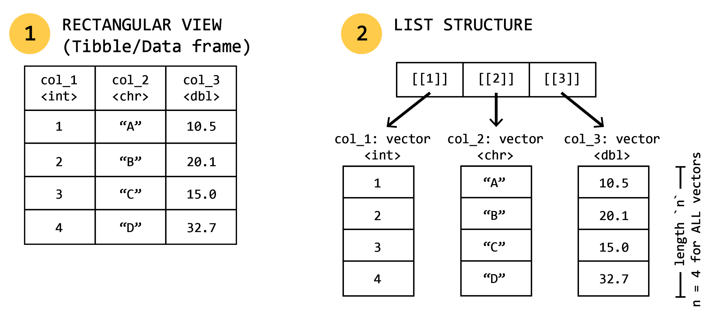

# Create atomic variables
my_numeric <- 42.5
my_integer <- 42L
my_character <- "iBUG Lab"
my_logical <- TRUE
# Check types
typeof(my_numeric)[1] "double"typeof(my_integer)[1] "integer"is.numeric(my_character)[1] FALSEClass orientation; What is data science?
As we discussed last week, programming in R is all about creating, maniupulating, and operating on objects.
R has 6 basic (“atomic”) vector types, but 4 are most commonly used:
| Type | Description | Examples |
|---|---|---|
| Logical | Boolean values (TRUE / FALSE) |
TRUE, FALSE, T, F |
| Numeric (Double) | Real numbers (default numeric type) | 3.14, 42.0 |
| Numeric (Integer) | Whole numbers (designated with L) |
42L |
| Character | Text strings | "hello", "camera trap" |
| Complex / Raw | Imaginary numbers or raw bytes (rare) | 1 + 4i, charToRaw("A") |
Use typeof() to check an object’s underlying storage type, and is.* functions (e.g., is.numeric(), is.character()) to test for specific types.
# Create atomic variables
my_numeric <- 42.5
my_integer <- 42L
my_character <- "iBUG Lab"
my_logical <- TRUE
# Check types
typeof(my_numeric)[1] "double"typeof(my_integer)[1] "integer"is.numeric(my_character)[1] FALSEA vector is a 1-dimensional collection of elements of the same type (that is, all numeric, character, etc.). We create vectors using the c() function which combines or concatenates elements.
character > double > integer > logical.# Creating a numeric vector
my_counts <- c(12, 4, 30, 0)
# Vectorized maths
my_counts_doubled <- my_counts * 2
my_counts_doubled[1] 24 8 60 0# Coercion of data: what do you think this will be converted to?
messy_vector <- c(1, "shikaka", TRUE)
typeof(messy_vector)[1] "character"Lists are very much like vectors, but they can hold different data types (including things like other lists). You can essentially put anything into them and retain its native data type.
list()[] (which returns a sub-list) or double brackets [[]] or $ (which extracts the actual object, e.g., another list, character, or vector).# Creating a list
camera_traps <- list(
site_id = "SITE-01",
active = TRUE,
battery = 88.5,
target_species = c("affinis", "auricomus", "impatiens")
)
# Exctracting/accessing elements
camera_traps$site_id[1] "SITE-01"camera_traps[[4]][1] # list element 4, object 1 (i.e., first target species)[1] "affinis"We can visualize lists using a series of nested boxes, as well as how different subsetting commands grab data from lists:

Most of us will work with tabular data 90% of the time. Tabular data, that is, a standard excel or Google Sheets file, arranged in a two-dimensional grid of rows and columns, is what most of us are familiar using to aggregate data from experiments and observational studies. When we bring these data into R, we’ll bring them in as data frames. At their core, data frames are essentially lists (each list is a “column”) of equal-length vectors (each vector element is a “row”).

Because data frames are essentially lists, the manner in which we access data is very similar. We’ll discuss more advanced/modern ways to access data in the coming weeks, but the base R ways to get at data are:
my_df$col_1 or my_df[, "col_1"] or my_df[["col_1"]]my_df[, 1] or my_df[[1]]my_df[1, ] (extracts row 1 across all columns)my_df[1, "col_1"] or my_df[1, 1]my_df[1:5, c("col_1", "col_2")]Great question! A tibble is a type of data frame. But a data frame is not necessarily a tibble! Tibbles are a special type of data frame that belong to the Tidyverse: a series of R packages and a philosophy of data organization and presentation. The developers describe them as: > “Tibbles are data.frames that are lazy and surly: they do less (i.e. they don’t change variable names or types, and don’t do partial matching) and complain more (e.g. when a variable does not exist). This forces you to confront problems earlier, typically leading to cleaner, more expressive code. Tibbles also have an enhanced print() method which makes them easier to use with large datasets containing complex objects.”
The visualization capacity alone makes them worth using, and they play nicely with all of the other tidyverse packages that we’ll be using throughout this semester. Here are the big advantages of tibbles:
No unintended vector dropping (drop = FALSE by default): When subsetting a single column in a standard data.frame, base R silently simplifies the output into a 1D vector. A tibble always returns a 2D tibble unless explicitly told otherwise, preventing downstream code breakage in functions expecting tabular data.
library(tibble)
# Base Data Frame
df <- data.frame(a = 1:3, b = c("x", "y", "z"))
class(df[, "a"])
# [1] "integer" <-- Automatically dropped to a vector!
# Tibble
tbl <- tibble(a = 1:3, b = c("x", "y", "z"))
class(tbl[, "a"])
# [1] "tbl_df" "tbl" "data.frame" <-- Remains a 1-column tibble!No partial name matching: Base data frames try to guess column names if you make a typo or use shorthand. Tibbles require exact column matching and trigger a warning if a column doesn’t exist, preventing silent logical errors.
# Base Data Frame (Silently matches "species_name" via "$spec")
df <- data.frame(species_name = c("affinis", "impatiens"))
df$spec
# [1] "affinis" "impatiens" <-- Dangerous!
# Tibble
tbl <- tibble(species_name = c("affinis", "impatiens"))
tbl$spec
# NULL
# Warning message: Unknown or uninitialised column: `spec`.Better printing for large datasets: Printing a large data.framecan easily overwhelm your screen by dumping thousands of rows and wrapping dozens of columns. Tibbles automatically truncate output to 10 rows, fit columns to your console width, displays data types for every column, and adds colored text to help elements stand out.
library(tibble)
# Creating a large-ish dataset
df_large <- data.frame(id = 1:100, x = runif(100), y = rnorm(100))
tbl_large <- as_tibble(df_large)
# Printing base df floods the console with oodles of lines
print(df_large) id x y
1 1 0.29224401 -0.772212110
2 2 0.34844001 -1.934799235
3 3 0.60341420 1.611797556
4 4 0.02652776 -1.767763525
5 5 0.56246441 0.073048706
6 6 0.36772110 -0.679771961
7 7 0.97158168 0.135997346
8 8 0.05928214 0.184743956
9 9 0.68322563 0.535903093
10 10 0.91766039 -1.144563672
11 11 0.46511393 -1.649541405
12 12 0.86764652 -1.262211479
13 13 0.74749775 0.072106929
14 14 0.49479885 0.797852501
15 15 0.73657884 -1.349075776
16 16 0.95688003 -1.359392311
17 17 0.44487694 0.823724989
18 18 0.86222072 -0.248048614
19 19 0.15061197 -0.758842274
20 20 0.49262214 -0.777129357
21 21 0.56079129 0.540975645
22 22 0.85500526 -0.171226852
23 23 0.14244389 -0.472368080
24 24 0.14940422 -0.624587929
25 25 0.82903294 0.209435945
26 26 0.53530030 0.396729190
27 27 0.27000126 -1.703970486
28 28 0.71899996 1.528193262
29 29 0.73373567 -1.366847901
30 30 0.99029727 -0.627520701
31 31 0.94093812 -0.857529741
32 32 0.19751226 -1.066562849
33 33 0.17661296 -0.032921299
34 34 0.13135919 -1.363191324
35 35 0.54928222 0.562060695
36 36 0.18658590 0.334504340
37 37 0.31250987 -0.191948733
38 38 0.43650051 -1.616850996
39 39 0.55030525 0.270525270
40 40 0.51832235 1.430497007
41 41 0.33227647 -0.162355534
42 42 0.25445127 0.271992442
43 43 0.62335337 1.166615495
44 44 0.67584206 0.370833646
45 45 0.10374934 -0.353522258
46 46 0.45725398 -1.172017290
47 47 0.58505823 -0.346153057
48 48 0.46429189 0.254048409
49 49 0.68338516 -0.440395614
50 50 0.04224752 1.182167589
51 51 0.95664306 1.295710871
52 52 0.77179693 0.393272186
53 53 0.80581101 0.254015534
54 54 0.83518369 -0.138241527
55 55 0.90124920 -0.032329300
56 56 0.58224368 -0.305978351
57 57 0.70154943 -0.870412982
58 58 0.93406246 0.668608313
59 59 0.82866660 -0.647340529
60 60 0.80605296 -1.445373403
61 61 0.39974675 0.420863764
62 62 0.21723738 0.149079434
63 63 0.37789323 0.921103145
64 64 0.47249195 -1.066768290
65 65 0.87124311 0.597588236
66 66 0.12927249 -1.150632875
67 67 0.21762981 -0.451162251
68 68 0.13890228 0.009249081
69 69 0.69363093 0.281774825
70 70 0.96841692 -0.064495201
71 71 0.74350130 1.747725805
72 72 0.36158569 -1.073186835
73 73 0.67656650 -0.375602807
74 74 0.46326749 -0.840728981
75 75 0.18790661 2.073438171
76 76 0.50410885 -0.074993020
77 77 0.99177669 0.944234945
78 78 0.84367125 0.475003614
79 79 0.54923819 -2.182471765
80 80 0.55153243 -0.571151394
81 81 0.53895034 1.411265508
82 82 0.20019808 1.436290830
83 83 0.11933212 0.824894585
84 84 0.84306523 0.327621553
85 85 0.18892175 0.235161342
86 86 0.73075015 1.714279825
87 87 0.84103397 -0.226115274
88 88 0.57434785 0.049312670
89 89 0.70917508 1.158395132
90 90 0.90576085 -0.933550574
91 91 0.95900290 -0.290561316
92 92 0.37882870 -0.150932924
93 93 0.32453673 0.441396448
94 94 0.69789981 -1.026178572
95 95 0.80699856 -0.684987261
96 96 0.20207935 -0.517426674
97 97 0.22222976 -0.174174260
98 98 0.86491887 -1.912205401
99 99 0.77188486 -0.265385422
100 100 0.14646743 -0.754066159# Printing tibble gives a clean, readable overview with data types (e.g., <int>, <dbl>)
tbl_large# A tibble: 100 × 3
id x y
<int> <dbl> <dbl>
1 1 0.292 -0.772
2 2 0.348 -1.93
3 3 0.603 1.61
4 4 0.0265 -1.77
5 5 0.562 0.0730
6 6 0.368 -0.680
7 7 0.972 0.136
8 8 0.0593 0.185
9 9 0.683 0.536
10 10 0.918 -1.14
# ℹ 90 more rowsBetter column construction: When creating a tibble, you can reference variables created earlier in the exact same call. Base data.frame throws an error if you attempt this.
# Works in tibble
tbl <- tibble(
x = 1:5,
y = x * 2 # References 'x' immediately
)Functions are code objects that perform operations on some input (called arguments) and return some output. As we discussed last week, anything with some word followed by () is a function. R has thousands of built in functions, and packages that we install come with their own sets of functions. We can also create our own! In fact, we’ll spend a whole chunk of a class on this topic as knowing how to do this can save you a ton of time and make fewer mistakes than simply copying and pasting code over and over again.
As a quick example, we can create a function to calculate the rate at which we capture images of insects in a camera trap:
# Defining our functions name and what it does
calculate_trap_rate <- function(image_count, days_active) {
rate <- image_count / days_active
return(rate)
}
# Using the function
calculate_trap_rate(image_count = 142, days_active = 7)[1] 20.28571Style is important. But unlike in life, having your “own” style when coding, is not necessarily something to strive for. In this space, style means having code formatting that is predictable and readable. To quote R4DS again… >“Good coding style is like correct punctuation: you can manage without it, butitsuremaesthingseasiertoread.”
It isn’t just a tedious exercise to make everything line up and look “pretty”. It legitimately helps both you and others be able to more quickly assess what your code is doing, and spot potential errors. remember, code is instruction to a an extremely inflexible, ridgid computer: they don’t like messy, confusing, and imprescise instructions! There is an implied contract between you and the computer: R will do the crap you don’t want to do provided that you are precise in your instructions.
In R, object names must start with a letter and can only contain letters, numbers, _, and .. Object names should be descriptive and have some internal logic, and you’ll need to figure out how you want to deal with multiple words. There are several methods:
i_use_snake_caseiUseCamelCaseperiod.caseYou.DO_you <– Resist entropy. Don’t do this.Personally, I use a split convention. I use period case to name assigned R objects that are saved in the environment. For column names in tibbles/data frames, I use snake case. In my mind, this helps me keep R object names separated from column or variable names within my data. Do what works best for you, just be consistent!
Another thing you’ll need to do is be concise in your naming. The longer the object name is, the more keystrokes you need to enter to access/reference to it (increasing chances of mistakes, and it’s just annoying to have to type that much). That said, it’s better to have a longer, more descriptive name than an extremely short, easy to type one. Ultimately, you’ll save more time typing a longer name than searching your code for what thing.2 is. In the event you have many different objects that are variations on a theme, it’s better to distinguish them using a common prefix rather than a suffix as autocomplete works most efficiently that way. For example, spp.model.1.glm and spp.model.2.glm
There’s a million ways to figure out a naming convention that works for you, but the most important part is to be consistent in your application. A trick I use is appending suffixes for common object types in R so that I can easily tell what they are from the name:
| Object Type | Suffix | Examples |
|---|---|---|
| Data frame/tibble | .df |
mydata.df |
| List | .list |
mylist.list |
| Models/model type | .lm, .glm, .glmm, .gam |
model1.gam |
When naming things, there are a few no-no words that you cannot use because R reserves them for specific uses.
| Word / Symbol | Category | Description |
|---|---|---|
if |
Control Flow | Executes code conditionally |
else |
Control Flow | Alternate execution branch for if |
for |
Control Flow | Loop over a collection or vector |
while |
Control Flow | Loop while a condition is true |
repeat |
Control Flow | Infinite loop (requires break to exit) |
in |
Control Flow | Used within for loops to specify sequence iteration |
break |
Control Flow | Exits a loop immediately |
next |
Control Flow | Skips the rest of the current loop iteration |
function |
Definition | Defines a custom function |
TRUE |
Constant | Logical true value |
FALSE |
Constant | Logical false value |
NULL |
Constant | Represents an empty object or absent value |
NA |
Constant | Represents missing or unavailable data |
Inf |
Constant | Positive infinity |
-Inf |
Constant | Negative infinity |
NaN |
Constant | “Not a Number” (e.g., \(0/0\)) |
Spaces are good! Spaces are your friend! White space, as it’s called (harkening back to the days of physially published things like newspapers and books), helps our eyes to more quickly assess what is happening in code. We should put spaces on either side of mathematical operators (except exponentiation ^) and around the assignment operator <-. Also put spaces after commas, just like we would writing. You can also add spaces to improve code alignment: this makes it easier to digest/skim quickly.
# Good spacing style
z <- (a + b)^4 / d
# Bad spacing style
z<-( a + b )^4/d
# Spaces after commas!
mean(x, na.rm = TRUE)
# Spaces for alignment
flights |>
mutate(
speed = distance / air_time,
dep_hour = dep_time %/% 100,
dep_min = dep_time %% 100
)We will talk more about pipes when we get into data wranglin’ in a couple of weeks, but pipes are a great way to streamline your code and avoid creating intermediate objects that clutter your environment and take up memory. Briefly, a pipe takes stuff on its left and passes it along to the function on its right. So, x |> f(y) is equivalent to f(x, y) and x |> f(y) |> g(z) is equivalent to g(f(x, y), z). In english, pipes basically translate to “then”. The point of introducing them here is to discuss how to style the code you write using pipes, not to get into their use per se.
Pipes should always have a space before them, and be the last thing on a line. This makes it easier to re-shuffle how things are ordered and quickly see the logic of a set of piped functions.
# Strive for
flights |>
filter(!is.na(arr_delay), !is.na(tailnum)) |>
count(dest)
# Avoid
flights|>filter(!is.na(arr_delay), !is.na(tailnum))|>count(dest)If the function you’re piping into has named arguments (e.g., mutate() or summarize()) put each argument on a new line. If it doesn’t (e.g., filter()), keep it on one line unless you can’t fit it all.
# Strive for
flights |>
group_by(tailnum) |>
summarize(
delay = mean(arr_delay, na.rm = TRUE),
n = n()
)
# Avoid
flights|>
group_by(tailnum) |>
summarize(
delay = mean(arr_delay, na.rm = TRUE),
n = n()
)
# Avoid
flights|>
group_by(tailnum) |>
summarize(
delay = mean(arr_delay, na.rm = TRUE),
n = n()
)There are some great R packages/add-ins that you can configure to help you quickly re-format your code to have a cohesive style. The best option is probably the styleR package.
Comments and code outline (via
.qmd)One key area to keep style and organization in mind is how you structure your scripts/markdown files from a meta-level. Rather than a bunch of jumbled code that flows endlessly for 500 lines, use hierarchical markdown structure or sectioning comments to delineate or break up your file into cohesive/logical pieces. Look at the frontmatter to download the template
.qmdfile that I use for all new notebooks.